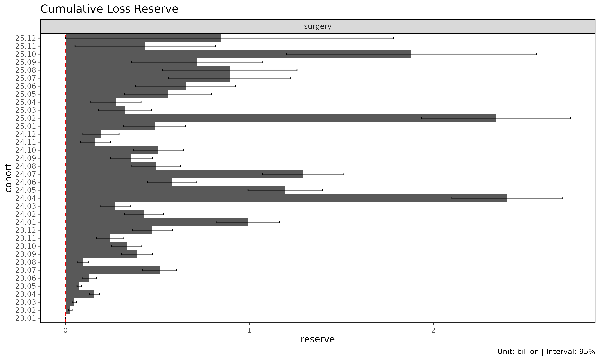
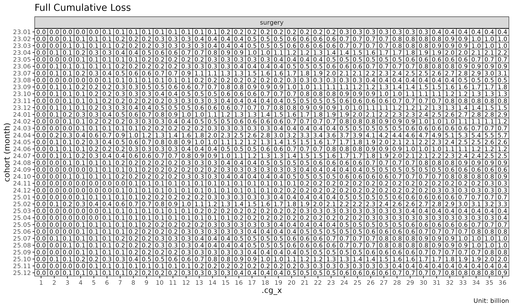

Korean version: 예측 방법론
This is a deep-dive into the five projection methods in
lossratio — exposure-driven (ED), chain ladder (CL),
stage-adaptive (SA), Bornhuetter-Ferguson (BF), and Cape Cod (CC). The
getting-started tutorial shows how to call each fit; this
document explains why each method exists, what assumption it
rests on, and when one is preferable to another. The intended reader is
a practitioner working on long-term health insurance loss ratios.
Why a dedicated projection toolkit
Loss ratio is a daily task in long-term health insurance: analysing cohort-level patterns, projecting ultimate outcomes, and monitoring realised experience against expectations. Existing reserving toolkits mostly trace back to property and casualty (P&C) origins, where the following long-term health characteristics are not directly captured:
- Denominator effect and inertia — Cumulative loss ratio’s denominator grows mechanically with development, dampening the signal of recent experience.
- Recurrent claims — Hospitalisation, surgery (grade 1-5), and outpatient coverage allow a single insured to file multiple claims; cumulative claim count can exceed insured count.
- Risk premium decomposition — In Korea, long-term insurance premium splits into risk premium + savings premium + loading premium. The actuarially meaningful denominator for loss ratio is the risk premium portion alone.
- Levelled premium — Non-renewable contracts charge a level premium computed at issue as the lifetime average. The charged premium is not premium; the period risk premium (morbidity rate x sum insured x persistency) must be constructed externally before being passed in.
- Regime change — Product redesigns, rate revisions, channel-mix shifts, and underwriting updates introduce cohort-level structural breaks in loss-ratio dynamics.
lossratio transplants core P&C reserving methodology
— Mack (1993) chain ladder, Bornhuetter-Ferguson (1972), Cape Cod
(Stanard 1985), Bühlmann-Straub (1970) credibility, and Sherman (1984)
tail extrapolation — and adapts each piece to the long-term health
issues above. The academic lineage is preserved; the goal is a tool that
domain practitioners can use immediately.
Methodological lineage
The methodological roots of long-term loss-ratio estimation lie in the following P&C reserving thread:
1967 Bühlmann credibility experience rating formalised
1970 Bühlmann-Straub premium-varying credibility
(volume-weighted estimator)
1972 Bornhuetter-Ferguson prior + observed loss blending
1984 Sherman chain ladder tail extrapolation
1985 Stanard (Cape Cod) reserving application of B-S
1993 Mack distribution-free MSE for chain
ladderTwo core ideas drive everything that follows:
- Chain ladder (Mack 1993) — Markov multiplicative recursion on cumulative loss : where .
- Cape Cod / Bühlmann-Straub — Loss anchored to premium (volume). yields a single ratio that drives ultimate estimation.
Both apply partially to long-term health, but both have cracks:
| Domain issue | Chain ladder | Cape Cod |
|---|---|---|
| Denominator effect / inertia | Early-dev over-volatile (small ) | Cohort-level ELR variation ignored |
| Levelled premium | Loss-only avoids it (weak against incidence shifts) | Flat absorbs developing premium |
| Recurrent claims | Works (freq x sev decoupled) | Works (volume measure only) |
| Developing risk premium | Not relevant | Single assumption breaks |
| Cohort-level regime change | Violates Mack’s no-calendar-year-effect | Cohort heterogeneity averaged out |
Chain ladder is weak early; Cape Cod cannot track developing premium. Each paradigm is incomplete on its own — which is exactly why the package offers five methods rather than one.
The core framework: loss / premium / ratio
All estimation rests on three observable quantities:
| Quantity | Meaning | Triangle column |
|---|---|---|
| loss | Cumulative loss |
loss, incr_loss
|
| premium | Risk-bearing volume (risk premium for long-term health) |
premium, incr_premium
|
| ratio | Loss ratio (cumulative loss / cumulative premium) |
ratio, incr_ratio
|
All three are stochastic observables developing over the cohort x dev grid. Premium is not a fixed underwriting volume; it is a developing quantity driven by morbidity x sum insured x persistency — the volume measure of Mack (1993), the natural weight of Bühlmann-Straub (1970).
For cohort at development period the projection methods use this notation:
- — cumulative loss
- — cumulative risk premium (premium)
- — age-to-age (chain ladder) factor
- — exposure-driven intensity
- maturity point — the development period at which stabilises for a group (detected from CV / RSE thresholds)
We use the surgery group throughout for brevity — every
step generalises to multi-group input.
library(lossratio)
data(experience)
tri <- as_triangle(
experience[coverage == "surgery"],
groups = "coverage",
cohort = "uy_m",
calendar = "cy_m",
loss = "incr_loss",
premium = "incr_premium"
)Direct estimation: ED, CL, SA
The three direct-estimation methods estimate factors from the data
and chain them forward. Their order — ed ->
cl -> sa — mirrors the methodological
progression primitive (ED) -> classical (CL) -> composition
(SA).
| Method | Point estimate | Variance helper | Domain character |
|---|---|---|---|
"ed" (default) |
(additive) |
.ed_g_var (B-S 1970) |
Robust to early-dev ATA volatility |
"cl" |
(multiplicative) |
.mack_f_var (Mack 1993) |
Natural after late-dev factor stabilisation |
"sa" |
ED before maturity , CL after | Composition | Stage-adaptive composition of ED and CL |
Exposure-driven ("ed", default)
ED projects every future increment using premium (risk premium) as the denominator:
ED is the default because it is an unconditional safe baseline: no maturity or regime detection is required, and the projection is robust under early-dev age-to-age volatility. Because the small of early dev never enters the denominator, ED does not inflate the estimate the way an early can.
The trade-off is cohort homogeneity. The pooled intensity
assumes cohorts are reasonably homogeneous in loss-per-premium level.
Under cohort-level drift the projection biases toward the pooled mean
and may over-project post-change cohorts — see the regime
argument for explicit filtering.
When to use ED: as a baseline where cohort homogeneity is plausible; short-tail products where chain ladder offers no advantage; sparse data where age-to-age factors are unreliable across all links.

summary(ratio_ed)
#> coverage cohort latest loss_ult reserve premium_ult
#> <char> <Date> <num> <num> <num> <num>
#> 1: surgery 2023-01-01 410248522 410248522 0 274192564
#> 2: surgery 2023-02-01 976330445 1001304261 24973816 665667720
#> 3: surgery 2023-03-01 978486045 1027365215 48879170 702047332
#> 4: surgery 2023-04-01 2029909919 2186835972 156926053 1464399410
#> 5: surgery 2023-05-01 624219436 700124202 75904766 483147255
#> 6: surgery 2023-06-01 802880717 924502357 121621640 591568799
#> 7: surgery 2023-07-01 2539141549 3028986426 489844877 1958263736
#> 8: surgery 2023-08-01 393678329 488454953 94776624 327535560
#> 9: surgery 2023-09-01 1364052542 1725804921 361752379 1091733892
#> 10: surgery 2023-10-01 979266043 1308019740 328753697 864204933
#> 11: surgery 2023-11-01 604685679 876716310 272030631 630311110
#> 12: surgery 2023-12-01 1026345366 1527010394 500665028 1057060867
#> 13: surgery 2024-01-01 1912177598 2942802614 1030625016 2009045340
#> 14: surgery 2024-02-01 733902485 1193629493 459727008 832229795
#> 15: surgery 2024-03-01 415459873 685046660 269586787 454345985
#> 16: surgery 2024-04-01 3286053526 5424401591 2138348065 3372494516
#> 17: surgery 2024-05-01 1451731153 2740753232 1289022079 1899849125
#> 18: surgery 2024-06-01 629668308 1170293302 540624994 750125230
#> 19: surgery 2024-07-01 1250954693 3461664518 2210709825 2891548085
#> 20: surgery 2024-08-01 425346694 1212435170 787088476 976935246
#> 21: surgery 2024-09-01 278156543 870725770 592569227 703906575
#> 22: surgery 2024-10-01 352070323 1217843289 865772966 984833529
#> 23: surgery 2024-11-01 99050501 398006955 298956454 324081360
#> 24: surgery 2024-12-01 103194013 456590846 353396833 366444614
#> 25: surgery 2025-01-01 227089025 1064623873 837534848 833732378
#> 26: surgery 2025-02-01 939163074 4386331021 3447167947 3286151352
#> 27: surgery 2025-03-01 112828845 727050149 614221304 566316398
#> 28: surgery 2025-04-01 82472453 616924302 534451849 476819833
#> 29: surgery 2025-05-01 141214851 1330756277 1189541426 1027051048
#> 30: surgery 2025-06-01 136406102 1072907077 936500975 783037474
#> 31: surgery 2025-07-01 149144024 1209357471 1060213447 859730812
#> 32: surgery 2025-08-01 116327076 1432029264 1315702188 1037192185
#> 33: surgery 2025-09-01 67465470 865239645 797774175 611257142
#> 34: surgery 2025-10-01 121626173 1911124852 1789498679 1338462726
#> 35: surgery 2025-11-01 15716444 828091909 812375465 593147593
#> 36: surgery 2025-12-01 4825085 1442904476 1438079391 1022559927
#> coverage cohort latest loss_ult reserve premium_ult
#> <char> <Date> <num> <num> <num> <num>
#> ratio_latest ratio_ult maturity_from loss_proc_se loss_param_se
#> <num> <num> <num> <num> <num>
#> 1: 1.4962059 1.496206 NA 0 0
#> 2: 1.5107824 1.504210 NA 2934231 4309793
#> 3: 1.4771448 1.463385 NA 3982661 5158162
#> 4: 1.5139132 1.493333 NA 6546789 11609585
#> 5: 1.4543748 1.449091 NA 4547580 3813039
#> 6: 1.5796369 1.562798 NA 17628088 8903464
#> 7: 1.5597190 1.546771 NA 35686361 31442590
#> 8: 1.4945957 1.491304 NA 16152143 5121110
#> 9: 1.6079808 1.580793 NA 37357117 20421919
#> 10: 1.5129472 1.513553 NA 37573001 17215247
#> 11: 1.3298743 1.390926 NA 35161608 12015326
#> 12: 1.3981081 1.444581 NA 53162531 22167720
#> 13: 1.4274951 1.464777 NA 76259904 44384184
#> 14: 1.3793745 1.434255 NA 51529679 18632983
#> 15: 1.4969280 1.507764 NA 41482939 11326747
#> 16: 1.6712898 1.608424 NA 120195326 95592928
#> 17: 1.3770835 1.442616 NA 88447102 46270702
#> 18: 1.5918247 1.560131 NA 66834389 21472291
#> 19: 0.8658750 1.197167 NA 104028932 46251465
#> 20: 0.9236050 1.241060 NA 62896850 16977280
#> 21: 0.8920448 1.236991 NA 56583751 11941938
#> 22: 0.8596968 1.236598 NA 71133708 16328611
#> 23: 0.7871749 1.228108 NA 41388948 5266012
#> 24: 0.7813438 1.246002 NA 48660596 6215769
#> 25: 0.8188282 1.276937 NA 82549103 15683804
#> 26: 0.9377837 1.334793 NA 193613125 74852479
#> 27: 0.7193486 1.283823 NA 71295313 10069046
#> 28: 0.6947510 1.293831 NA 68826316 8438639
#> 29: 0.6203897 1.295706 NA 116537796 18989499
#> 30: 0.8981587 1.370186 NA 137078933 22543675
#> 31: 1.0440457 1.406670 NA 166193829 31402939
#> 32: 0.8100543 1.380679 NA 184425493 33103273
#> 33: 0.9985960 1.415508 NA 180452022 27168526
#> 34: 1.0894657 1.427851 NA 331672128 79057462
#> 35: 0.4765917 1.396098 NA 190733674 20867271
#> 36: 0.1689836 1.411071 NA 464027946 65288155
#> ratio_latest ratio_ult maturity_from loss_proc_se loss_param_se
#> <num> <num> <num> <num> <num>
#> loss_total_se loss_total_cv ratio_se ratio_cv ratio_ci_lo ratio_ci_hi
#> <num> <num> <num> <num> <num> <num>
#> 1: 0 0.000000000 0.000000000 0.000000000 1.4962059 1.496206
#> 2: 5213830 0.005207039 0.007832482 0.005207039 1.4888589 1.519562
#> 3: 6516765 0.006343182 0.009282515 0.006343182 1.4451911 1.481578
#> 4: 13328275 0.006094776 0.009101530 0.006094776 1.4754943 1.511172
#> 5: 5934623 0.008476529 0.012283260 0.008476529 1.4250160 1.473165
#> 6: 19748953 0.021361712 0.033384034 0.021361712 1.4973662 1.628229
#> 7: 47562095 0.015702314 0.024287890 0.015702314 1.4991681 1.594375
#> 8: 16944542 0.034690081 0.051733442 0.034690081 1.3899079 1.592699
#> 9: 42574746 0.024669501 0.038997366 0.024669501 1.5043592 1.657226
#> 10: 41329107 0.031596700 0.047823272 0.031596700 1.4198208 1.607285
#> 11: 37157863 0.042382995 0.058951622 0.042382995 1.2753833 1.506469
#> 12: 57599154 0.037720211 0.054489912 0.037720211 1.3377831 1.551380
#> 13: 88235644 0.029983541 0.043919190 0.029983541 1.3786966 1.550857
#> 14: 54795036 0.045906235 0.065841233 0.045906235 1.3052083 1.563301
#> 15: 43001505 0.062771643 0.094644843 0.062771643 1.3222638 1.693265
#> 16: 153573839 0.028311665 0.045537165 0.028311665 1.5191729 1.697675
#> 17: 99819176 0.036420344 0.052540580 0.036420344 1.3396386 1.545594
#> 18: 70198966 0.059984079 0.093582996 0.059984079 1.3767113 1.743550
#> 19: 113847340 0.032888034 0.039372453 0.032888034 1.1199979 1.274335
#> 20: 65147845 0.053733055 0.066685940 0.053733055 1.1103579 1.371762
#> 21: 57830189 0.066416077 0.082156058 0.066416077 1.0759676 1.398013
#> 22: 72983751 0.059928689 0.074107704 0.059928689 1.0913497 1.381847
#> 23: 41722607 0.104828839 0.128741150 0.104828839 0.9757801 1.480436
#> 24: 49055982 0.107439697 0.133870114 0.107439697 0.9836217 1.508383
#> 25: 84025806 0.078925344 0.100782707 0.078925344 1.0794067 1.474468
#> 26: 207578746 0.047324004 0.063167737 0.047324004 1.2109863 1.458599
#> 27: 72002829 0.099034199 0.127142405 0.099034199 1.0346287 1.533018
#> 28: 69341707 0.112399053 0.145425384 0.112399053 1.0088025 1.578860
#> 29: 118074803 0.088727594 0.114964882 0.088727594 1.0703790 1.521033
#> 30: 138920305 0.129480276 0.177412077 0.129480276 1.0224648 1.717907
#> 31: 169134660 0.139854976 0.196729788 0.139854976 1.0210866 1.792253
#> 32: 187372862 0.130844297 0.180653947 0.130844297 1.0266036 1.734754
#> 33: 182485783 0.210907792 0.298541761 0.210907792 0.8303773 2.000640
#> 34: 340964049 0.178410138 0.254743029 0.178410138 0.9285635 1.927138
#> 35: 191871774 0.231703476 0.323480658 0.231703476 0.7620871 2.030108
#> 36: 468598419 0.324760527 0.458260104 0.324760527 0.5128975 2.309244
#> loss_total_se loss_total_cv ratio_se ratio_cv ratio_ci_lo ratio_ci_hi
#> <num> <num> <num> <num> <num> <num>Classical chain ladder ("cl")
CL is the classical Mack (1993) model:
The cohort’s own cumulative loss acts as the anchor, so cohort-level drift propagates naturally without explicit regime detection. The trade-off is the mirror image of ED’s: CL is volatile when early are noisy, because small denominators amplify link errors.
Within fit_ratio(), the CL method projects loss
and premium forward — each via chain ladder on its own column —
and computes the loss-ratio uncertainty via the delta method. The loss
lane alone is equivalent to fit_cl(tri).
When to use CL: once age-to-age factors stabilise; cohort-level drift scenarios where the cohort’s observed trajectory should anchor the projection; reserving exercises where regulators expect the classical Mack form for documentation.

Stage-adaptive ("sa")
SA composes ED before the maturity point with CL after, exploiting the fact that is volatile early and stable late, while behaves the opposite way:
- Before maturity SA anchors the loss estimate to premium volume, avoiding the volatile-link explosion that classical CL suffers when early are noisy.
- After maturity SA preserves the cohort’s own observed level, avoiding the “all cohorts converge to the average” behaviour that pure ED suffers in the tail.
When to use SA: long-tail portfolios where early dev is volatile (ED phase) and cohort-level drift needs cohort-anchored projection in later dev (CL phase); recent cohorts (immature data) mixed with older cohorts (matured); health insurance cohorts with a structural pre-/post-maturity difference (e.g. waiting-period transitions).

summary(ratio_sa)
#> coverage cohort latest loss_ult reserve premium_ult
#> <char> <Date> <num> <num> <num> <num>
#> 1: surgery 2023-01-01 410248522 410248522 0 274192564
#> 2: surgery 2023-02-01 976330445 1001441303 25110858 665667720
#> 3: surgery 2023-03-01 978486045 1026151243 47665198 702047332
#> 4: surgery 2023-04-01 2029909919 2186771221 156861302 1464399410
#> 5: surgery 2023-05-01 624219436 697669301 73449865 483147255
#> 6: surgery 2023-06-01 802880717 931393934 128513217 591568799
#> 7: surgery 2023-07-01 2539141549 3050990158 511848609 1958263736
#> 8: surgery 2023-08-01 393678329 488218204 94539875 327535560
#> 9: surgery 2023-09-01 1364052542 1751869308 387816766 1091733892
#> 10: surgery 2023-10-01 979266043 1311793843 332527800 864204933
#> 11: surgery 2023-11-01 604685679 848103123 243417444 630311110
#> 12: surgery 2023-12-01 1026345366 1497869029 471523663 1057060867
#> 13: surgery 2024-01-01 1912177598 2901492851 989315253 2009045340
#> 14: surgery 2024-02-01 733902485 1160045952 426143467 832229795
#> 15: surgery 2024-03-01 415459873 686574148 271114275 454345985
#> 16: surgery 2024-04-01 3286053526 5687484014 2401430488 3372494516
#> 17: surgery 2024-05-01 1451731153 2645801838 1194070685 1899849125
#> 18: surgery 2024-06-01 629668308 1209024555 579356247 750125230
#> 19: surgery 2024-07-01 1250954693 2542927190 1291972497 2891548085
#> 20: surgery 2024-08-01 425346694 918120582 492773888 976935246
#> 21: surgery 2024-09-01 278156543 635470028 357313485 703906575
#> 22: surgery 2024-10-01 352070323 856446521 504376198 984833529
#> 23: surgery 2024-11-01 99050501 260916096 161865595 324081360
#> 24: surgery 2024-12-01 103194013 295637296 192443283 366444614
#> 25: surgery 2025-01-01 227089025 710560093 483471068 833732378
#> 26: surgery 2025-02-01 939163074 3276849152 2337686078 3286151352
#> 27: surgery 2025-03-01 112828845 434950057 322121212 566316398
#> 28: surgery 2025-04-01 82472453 356301148 273828695 476819833
#> 29: surgery 2025-05-01 141214851 697290587 556075736 1027051048
#> 30: surgery 2025-06-01 136406102 789468799 653062697 783037474
#> 31: surgery 2025-07-01 149144024 1040451732 891307708 859730812
#> 32: surgery 2025-08-01 116327076 1008356733 892029657 1037192185
#> 33: surgery 2025-09-01 67465470 783000257 715534787 611257142
#> 34: surgery 2025-10-01 121626173 2001214863 1879588690 1338462726
#> 35: surgery 2025-11-01 15716444 576954661 561238217 593147593
#> 36: surgery 2025-12-01 4825085 1246569307 1241744222 1022559927
#> coverage cohort latest loss_ult reserve premium_ult
#> <char> <Date> <num> <num> <num> <num>
#> ratio_latest ratio_ult maturity_from loss_proc_se loss_param_se
#> <num> <num> <num> <num> <num>
#> 1: 1.4962059 1.4962059 4 0 0
#> 2: 1.5107824 1.5044162 4 2838052 4263874
#> 3: 1.4771448 1.4616554 4 3880367 4840717
#> 4: 1.5139132 1.4932888 4 7135821 10972855
#> 5: 1.4543748 1.4440097 4 4646457 3580792
#> 6: 1.5796369 1.5744474 4 17348955 8670204
#> 7: 1.5597190 1.5580078 4 38013946 29987964
#> 8: 1.4945957 1.4905808 4 16303418 4959278
#> 9: 1.6079808 1.6046670 4 37742856 20054538
#> 10: 1.5129472 1.5179199 4 39387794 16559819
#> 11: 1.3298743 1.3455310 4 34650050 11722778
#> 12: 1.3981081 1.4170130 4 51946833 22082843
#> 13: 1.4274951 1.4442147 4 73730102 44277226
#> 14: 1.3793745 1.3939010 4 51235927 18527296
#> 15: 1.4969280 1.5111263 4 41831046 11113922
#> 16: 1.6712898 1.6864324 4 118856877 94000634
#> 17: 1.3770835 1.3926379 4 90510561 45996854
#> 18: 1.5918247 1.6117636 4 66688102 21223812
#> 19: 0.8658750 0.8794345 4 104142855 46376952
#> 20: 0.9236050 0.9397968 4 62641056 17014220
#> 21: 0.8920448 0.9027761 4 56889317 11861881
#> 22: 0.8596968 0.8696358 4 67281634 16371282
#> 23: 0.7871749 0.8050944 4 43610819 5306326
#> 24: 0.7813438 0.8067721 4 49362868 6380942
#> 25: 0.8188282 0.8522640 4 81647027 16077360
#> 26: 0.9377837 0.9971693 4 184888599 76955907
#> 27: 0.7193486 0.7680337 4 73183198 10391123
#> 28: 0.6947510 0.7472448 4 68965019 8663440
#> 29: 0.6203897 0.6789250 4 117297078 19478869
#> 30: 0.8981587 1.0082133 4 134689808 23300101
#> 31: 1.0440457 1.2102064 4 164702068 31947996
#> 32: 0.8100543 0.9721985 4 174053848 34060502
#> 33: 0.9985960 1.2809670 4 180505913 28824273
#> 34: 1.0894657 1.4951592 4 341752123 82043614
#> 35: 0.4765917 0.9727000 4 198381074 21884900
#> 36: 0.1689836 1.2190672 4 480416590 66092613
#> ratio_latest ratio_ult maturity_from loss_proc_se loss_param_se
#> <num> <num> <num> <num> <num>
#> loss_total_se loss_total_cv ratio_se ratio_cv ratio_ci_lo ratio_ci_hi
#> <num> <num> <num> <num> <num> <num>
#> 1: 0 0.000000000 0.000000000 0.000000000 1.4962059 1.4962059
#> 2: 5122027 0.005114655 0.007694570 0.005114655 1.4893351 1.5194973
#> 3: 6204014 0.006045906 0.008837031 0.006045906 1.4443351 1.4789756
#> 4: 13089060 0.005985564 0.008938176 0.005985564 1.4757703 1.5108073
#> 5: 5866144 0.008408201 0.012141523 0.008408201 1.4202127 1.4678066
#> 6: 19394810 0.020823424 0.032785384 0.020823424 1.5101892 1.6387055
#> 7: 48418365 0.015869722 0.024725150 0.015869722 1.5095474 1.6064682
#> 8: 17041006 0.034904487 0.052027956 0.034904487 1.3886078 1.5925537
#> 9: 42740001 0.024396798 0.039148735 0.024396798 1.5279369 1.6813971
#> 10: 42727344 0.032571691 0.049441217 0.032571691 1.4210169 1.6148229
#> 11: 36579359 0.043130792 0.058033816 0.043130792 1.2317868 1.4592752
#> 12: 56445774 0.037684052 0.053398793 0.037684052 1.3123533 1.5216727
#> 13: 86003492 0.029641118 0.042808139 0.029641118 1.3603123 1.5281171
#> 14: 54482850 0.046966114 0.065466113 0.046966114 1.2655898 1.5222122
#> 15: 43282278 0.063040938 0.095262817 0.063040938 1.3244146 1.6978379
#> 16: 151535726 0.026643719 0.044932831 0.026643719 1.5983657 1.7744991
#> 17: 101527692 0.038373128 0.053439871 0.038373128 1.2878976 1.4973781
#> 18: 69983949 0.057884638 0.093296354 0.057884638 1.4289061 1.7946211
#> 19: 114002439 0.044831185 0.039426091 0.044831185 0.8021608 0.9567082
#> 20: 64910597 0.070699425 0.066443091 0.070699425 0.8095707 1.0700228
#> 21: 58112809 0.091448544 0.082557560 0.091448544 0.7409662 1.0645859
#> 22: 69244762 0.080851239 0.070311134 0.080851239 0.7318285 1.0074431
#> 23: 43932455 0.168377712 0.135559957 0.168377712 0.5394018 1.0707871
#> 24: 49773579 0.168360283 0.135828381 0.168360283 0.5405534 1.0729908
#> 25: 83214894 0.117111691 0.099810079 0.117111691 0.6566398 1.0478882
#> 26: 200264839 0.061115062 0.060942062 0.061115062 0.8777250 1.1166135
#> 27: 73917223 0.169944163 0.130522838 0.169944163 0.5122136 1.0238537
#> 28: 69507043 0.195079480 0.145772130 0.195079480 0.4615367 1.0329529
#> 29: 118903452 0.170522095 0.115771706 0.170522095 0.4520166 0.9058333
#> 30: 136690304 0.173142123 0.174564192 0.173142123 0.6660738 1.3503528
#> 31: 167772005 0.161249196 0.195144809 0.161249196 0.8277296 1.5926832
#> 32: 177355179 0.175885353 0.170995484 0.175885353 0.6370536 1.3073435
#> 33: 182792843 0.233451830 0.299044102 0.233451830 0.6948514 1.8670827
#> 34: 351462186 0.175624413 0.262586457 0.175624413 0.9804992 2.0098192
#> 35: 199584567 0.345927644 0.336483818 0.345927644 0.3132038 1.6321962
#> 36: 484941577 0.389020951 0.474242696 0.389020951 0.2895686 2.1485658
#> loss_total_se loss_total_cv ratio_se ratio_cv ratio_ci_lo ratio_ci_hi
#> <num> <num> <num> <num> <num> <num>Comparing ED, CL, SA
ratios <- list(
ed = fit_ratio(tri, method = "ed"),
cl = fit_ratio(tri, method = "cl"),
sa = fit_ratio(tri, method = "sa")
)
# Cohort-level ultimate-loss summary
summary(ratios$ed)$loss_ult
#> [1] 410248522 1001304261 1027365215 2186835972 700124202 924502357
#> [7] 3028986426 488454953 1725804921 1308019740 876716310 1527010394
#> [13] 2942802614 1193629493 685046660 5424401591 2740753232 1170293302
#> [19] 3461664518 1212435170 870725770 1217843289 398006955 456590846
#> [25] 1064623873 4386331021 727050149 616924302 1330756277 1072907077
#> [31] 1209357471 1432029264 865239645 1911124852 828091909 1442904476
summary(ratios$cl)$loss_ult
#> [1] 410248522 1001441303 1026151243 2186771221 697669301 931393934
#> [7] 3050990158 488218204 1751869308 1311793843 848103123 1497869029
#> [13] 2901492851 1160045952 686574148 5687484014 2645801838 1209024555
#> [19] 2542927190 918120582 635470028 856446521 260916096 295637296
#> [25] 710560093 3276849152 434950057 356301148 697290587 789468799
#> [31] 1040451732 1008356733 783000257 2001214863 NA NA
summary(ratios$sa)$loss_ult
#> [1] 410248522 1001441303 1026151243 2186771221 697669301 931393934
#> [7] 3050990158 488218204 1751869308 1311793843 848103123 1497869029
#> [13] 2901492851 1160045952 686574148 5687484014 2645801838 1209024555
#> [19] 2542927190 918120582 635470028 856446521 260916096 295637296
#> [25] 710560093 3276849152 434950057 356301148 697290587 789468799
#> [31] 1040451732 1008356733 783000257 2001214863 576954661 1246569307| Method | Mechanism | When to use |
|---|---|---|
| ED | pooled x cohort premium | default baseline; assumes cohort homogeneity |
| CL | pooled x cohort cum_loss | cohort-level drift; cohort-anchored |
| SA | ED early + CL late | long-tail with both volatile early dev and cohort-level late drift |
Prior-anchored estimation: BF and CC
ED, CL, and SA all estimate factors from the data. When the observed triangle is thin — immature cohorts, or cohorts right after a rate change — that estimate can be unstable. The prior-anchored family blends an expected loss ratio (ELR) with whatever loss has already emerged:
The two methods differ only in where the ELR comes from.
| Method | ELR source | Domain use case |
|---|---|---|
"bf" |
External (user supplied via prior) |
Immature and post-rate-change cohorts — anchor on an external prior when observed data is thin (Bornhuetter-Ferguson 1972) |
"cc" |
Derived from data (payout-weighted ) | Cohort-cohesive estimation — when pricing/industry suggests a natural single ELR target (Stanard 1985, Cape Cod) |
Bornhuetter-Ferguson ("bf")
BF takes the ELR as an external input. The emerged loss is kept as-is, and only the unemerged portion is filled in from the prior. As a cohort matures the data term dominates and the prior fades — BF degrades gracefully toward a chain-ladder answer.
fit_bf(tri, prior = 0.7)
#> <BFFit>
#> method : bf
#> loss : loss
#> premium : premium
#> alpha : 1
#> sigma_method : locf
#> recent : all
#> regime : none
#> groups : coverage
#> cohorts (n) : 36
#> prior : scalar elr = 0.7
#> ci_type : analyticalThe prior argument also accepts a per-group
data.frame, optionally carrying an elr_se
column to treat the prior as a distribution rather than a fixed
point.
Cape Cod ("cc")
CC has the same blending form as BF but estimates the ELR from the data itself — a payout-weighted pooled ratio across cohorts. It is the natural choice when pricing or industry context suggests a single coherent ELR target and no external prior is on hand.
fit_cc(tri)
#> <CCFit>
#> method : cc
#> loss : loss
#> premium : premium
#> alpha : 1
#> sigma_method : locf
#> recent : all
#> regime : none
#> groups : coverage
#> cohorts (n) : 36
#> pooled ELR :
#> surgery : 1.3558
#> ci_type : analyticalThree aggregation axes
ED, CC, and BF differ in how they aggregate the loss-per-premium signal:
- ED — per-link : dev-granular, cohort-uniform per link.
- CC — cohort-level single ELR: cohort-uniform, dev-aggregated.
- BF — external prior: bypasses data estimation altogether.
Together the five methods reconstruct the P&C reserving trinity for long-term health, and the three aggregation axes each serve a distinct use case.
Chain ladder as a reserving worker
fit_cl() is the dedicated chain ladder fit for a single
value column. Unlike fit_ratio() — which projects loss and
premium jointly to get loss ratio — fit_cl() projects one
cumulative metric forward and computes Mack-style standard errors per
cohort. This is the classical P&C reserving use case:
projecting ultimate paid / incurred loss for an open accident year.
Practitioners with a P&C background will recognise the Mack workflow
directly.
cl <- fit_cl(tri)
print(cl)
#> <CLFit>
#> method : mack
#> loss : loss
#> weight : none
#> alpha : 1
#> sigma_method: locf
#> recent : all
#> regime : none
#> use_maturity: FALSE
#> tail_factor : 1
#> groups : coverage
#> periods : 36fit_cl() summarises adjacent development links by
age-to-age factors
,
selected per link and then chained to project each cohort forward to
ultimate. On top of the point projection, Mack’s formulae decompose the
prediction variance into process and parameter components:
-
loss_proc_se— process variance, from (residual link variance per development period). -
loss_param_se— parameter variance, from the uncertainty of the selected age-to-age factors . -
loss_total_se— total standard error, . -
loss_total_cv— coefficient of variation,loss_total_se / loss_proj.
summary(cl)
#> coverage cohort latest loss_ult reserve loss_proc_se
#> <char> <Date> <num> <num> <num> <num>
#> 1: surgery 2023-01-01 410248522 410248522 0 0
#> 2: surgery 2023-02-01 976330445 1001441303 25110858 2751819
#> 3: surgery 2023-03-01 978486045 1026151243 47665198 3967869
#> 4: surgery 2023-04-01 2029909919 2186771221 156861302 6942937
#> 5: surgery 2023-05-01 624219436 697669301 73449865 4455636
#> 6: surgery 2023-06-01 802880717 931393934 128513217 17869565
#> 7: surgery 2023-07-01 2539141549 3050990158 511848609 35918003
#> 8: surgery 2023-08-01 393678329 488218204 94539875 15583801
#> 9: surgery 2023-09-01 1364052542 1751869308 387816766 38001618
#> 10: surgery 2023-10-01 979266043 1311793843 332527800 38496097
#> 11: surgery 2023-11-01 604685679 848103123 243417444 35719579
#> 12: surgery 2023-12-01 1026345366 1497869029 471523663 51405333
#> 13: surgery 2024-01-01 1912177598 2901492851 989315253 75674312
#> 14: surgery 2024-02-01 733902485 1160045952 426143467 51719398
#> 15: surgery 2024-03-01 415459873 686574148 271114275 41313266
#> 16: surgery 2024-04-01 3286053526 5687484014 2401430488 122770258
#> 17: surgery 2024-05-01 1451731153 2645801838 1194070685 93024106
#> 18: surgery 2024-06-01 629668308 1209024555 579356247 65346187
#> 19: surgery 2024-07-01 1250954693 2542927190 1291972497 103136528
#> 20: surgery 2024-08-01 425346694 918120582 492773888 65317866
#> 21: surgery 2024-09-01 278156543 635470028 357313485 56737053
#> 22: surgery 2024-10-01 352070323 856446521 504376198 68091257
#> 23: surgery 2024-11-01 99050501 260916096 161865595 41787166
#> 24: surgery 2024-12-01 103194013 295637296 192443283 49617195
#> 25: surgery 2025-01-01 227089025 710560093 483471068 83635489
#> 26: surgery 2025-02-01 939163074 3276849152 2337686078 192418633
#> 27: surgery 2025-03-01 112828845 434950057 322121212 72345359
#> 28: surgery 2025-04-01 82472453 356301148 273828695 68974257
#> 29: surgery 2025-05-01 141214851 697290587 556075736 119238986
#> 30: surgery 2025-06-01 136406102 789468799 653062697 136628652
#> 31: surgery 2025-07-01 149144024 1040451732 891307708 167039609
#> 32: surgery 2025-08-01 116327076 1008356733 892029657 183653360
#> 33: surgery 2025-09-01 67465470 783000257 715534787 179947037
#> 34: surgery 2025-10-01 121626173 2001214863 1879588690 337103186
#> 35: surgery 2025-11-01 15716444 449653406 433936962 194100658
#> 36: surgery 2025-12-01 4825085 850839118 846014033 472741759
#> coverage cohort latest loss_ult reserve loss_proc_se
#> <char> <Date> <num> <num> <num> <num>
#> loss_param_se loss_total_se loss_total_cv
#> <num> <num> <num>
#> 1: 0 0 0.000000000
#> 2: 4299412 5104650 0.005097304
#> 3: 5021196 6399718 0.006236623
#> 4: 11297887 13260717 0.006064062
#> 5: 3696918 5789637 0.008298541
#> 6: 8694892 19872657 0.021336469
#> 7: 30501066 47121311 0.015444596
#> 8: 5072721 16388635 0.033568259
#> 9: 20827314 43334744 0.024736288
#> 10: 16992221 42079509 0.032077837
#> 11: 11901733 37650227 0.044393454
#> 12: 22008504 55918535 0.037332059
#> 13: 43971810 87522121 0.030164514
#> 14: 18269127 54851227 0.047283667
#> 15: 11014493 42756344 0.062274911
#> 16: 92689755 153830838 0.027047256
#> 17: 45040851 103354548 0.039063601
#> 18: 20907249 68609309 0.056747655
#> 19: 45568404 112754702 0.044340515
#> 20: 16819267 67448584 0.073463753
#> 21: 11859688 57963310 0.091213288
#> 22: 16219631 69996398 0.081728860
#> 23: 5190764 42108328 0.161386470
#> 24: 6221683 50005754 0.169145620
#> 25: 15668260 85090478 0.119751276
#> 26: 75222224 206599403 0.063048188
#> 27: 10161412 73055495 0.167962950
#> 28: 8575343 69505285 0.195074548
#> 29: 19174475 120770842 0.173200161
#> 30: 22834478 138523651 0.175464377
#> 31: 31445935 169973756 0.163365345
#> 32: 32987225 186592373 0.185045993
#> 33: 27713231 182068556 0.232526816
#> 34: 80113491 346492034 0.173140846
#> 35: 21034520 195237078 0.434194593
#> 36: 66075497 477337136 0.561019265
#> loss_param_se loss_total_se loss_total_cv
#> <num> <num> <num>
plot(cl, type = "projection", show_interval = TRUE)
plot(cl, type = "reserve", conf_level = 0.95)
plot_triangle() displays the cohort x dev cells as a
heatmap, distinguishing observed cells from projected, with
label_style showing per-cell CV / SE / CI:
plot_triangle(cl, region = "full") # observed + projected
plot_triangle(cl, label_style = "cv") # per-cell coefficient of variation
Tail factor
For triangles where the latest observed development period is still
developing, an extrapolated tail factor estimates ultimate. The
extrapolation fits
— a Sherman (1984) log-linear tail — to the selected ATA factors and
extends the projection by the cumulative product of extrapolated
values. Disabled by default (tail = FALSE).
fit_cl(tri, tail = TRUE) # log-linear extrapolation
#> <CLFit>
#> method : mack
#> loss : loss
#> weight : none
#> alpha : 1
#> sigma_method: locf
#> recent : all
#> regime : none
#> use_maturity: FALSE
#> tail_factor : 1.188138
#> groups : coverage
#> periods : 36
fit_cl(tri, tail = 1.025) # or a literal tail factor
#> <CLFit>
#> method : mack
#> loss : loss
#> weight : none
#> alpha : 1
#> sigma_method: locf
#> recent : all
#> regime : none
#> use_maturity: FALSE
#> tail_factor : 1.025
#> groups : coverage
#> periods : 36Sigma extrapolation methods
Mack variance requires
at all development links, including the last where it cannot be
estimated directly. sigma_method controls the
extrapolation:
sigma_method |
Behaviour |
|---|---|
"locf" |
(default) last observation carried forward |
"min_last2" |
min of the last two estimable values — conservative |
"loglinear" |
log-linear extrapolation from the observed sequence |
"mack" |
Mack (1993) Appendix B tail estimator — closed-form for the last link only; LOCF with warning beyond that |
"none" |
no extrapolation;
stays NA (variance treated as zero downstream) |
fit_cl(tri, sigma_method = "loglinear")
#> <CLFit>
#> method : mack
#> loss : loss
#> weight : none
#> alpha : 1
#> sigma_method: loglinear
#> recent : all
#> regime : none
#> use_maturity: FALSE
#> tail_factor : 1
#> groups : coverage
#> periods : 36Variance and confidence intervals
fit_ratio() reports analytical standard errors for
L/P. Two variants control how premium uncertainty
enters:
-
se_method = "fixed"(default) — premium treated as fixed, . Strictly the delta method withVar(P) = 0andCov(L,P) = 0. -
se_method = "delta"— full delta method including premium uncertainty and loss-premium correlationrho:
There are two complementary paths to SE estimation:
-
Analytical —
.mack_f_var()(Mack 1993) and.ed_g_var()(B-S 1970) provide closed-form per-link variance, distribution-free. -
Bootstrap — a residual paradigm (
cell/link/parametric) drives forward simulation, capturing distributional shape. Residual choice determines both the process variance scale and the forward-sim model (paradigm matching).
A large divergence between the two paths is a model-misspecification signal; routinely computing both serves as a sanity check.
ratio_boot <- fit_ratio(tri, method = "ed", bootstrap = TRUE,
B = 1000, seed = 1)
summary(ratio_boot)
#> coverage cohort latest loss_ult reserve premium_ult
#> <char> <Date> <num> <num> <num> <num>
#> 1: surgery 2023-01-01 410248522 410248522 0 274192564
#> 2: surgery 2023-02-01 976330445 1001304261 24973816 665667720
#> 3: surgery 2023-03-01 978486045 1027365215 48879170 702047332
#> 4: surgery 2023-04-01 2029909919 2186835972 156926053 1464399410
#> 5: surgery 2023-05-01 624219436 700124202 75904766 483147255
#> 6: surgery 2023-06-01 802880717 924502357 121621640 591568799
#> 7: surgery 2023-07-01 2539141549 3028986426 489844877 1958263736
#> 8: surgery 2023-08-01 393678329 488454953 94776624 327535560
#> 9: surgery 2023-09-01 1364052542 1725804921 361752379 1091733892
#> 10: surgery 2023-10-01 979266043 1308019740 328753697 864204933
#> 11: surgery 2023-11-01 604685679 876716310 272030631 630311110
#> 12: surgery 2023-12-01 1026345366 1527010394 500665028 1057060867
#> 13: surgery 2024-01-01 1912177598 2942802614 1030625016 2009045340
#> 14: surgery 2024-02-01 733902485 1193629493 459727008 832229795
#> 15: surgery 2024-03-01 415459873 685046660 269586787 454345985
#> 16: surgery 2024-04-01 3286053526 5424401591 2138348065 3372494516
#> 17: surgery 2024-05-01 1451731153 2740753232 1289022079 1899849125
#> 18: surgery 2024-06-01 629668308 1170293302 540624994 750125230
#> 19: surgery 2024-07-01 1250954693 3461664518 2210709825 2891548085
#> 20: surgery 2024-08-01 425346694 1212435170 787088476 976935246
#> 21: surgery 2024-09-01 278156543 870725770 592569227 703906575
#> 22: surgery 2024-10-01 352070323 1217843289 865772966 984833529
#> 23: surgery 2024-11-01 99050501 398006955 298956454 324081360
#> 24: surgery 2024-12-01 103194013 456590846 353396833 366444614
#> 25: surgery 2025-01-01 227089025 1064623873 837534848 833732378
#> 26: surgery 2025-02-01 939163074 4386331021 3447167947 3286151352
#> 27: surgery 2025-03-01 112828845 727050149 614221304 566316398
#> 28: surgery 2025-04-01 82472453 616924302 534451849 476819833
#> 29: surgery 2025-05-01 141214851 1330756277 1189541426 1027051048
#> 30: surgery 2025-06-01 136406102 1072907077 936500975 783037474
#> 31: surgery 2025-07-01 149144024 1209357471 1060213447 859730812
#> 32: surgery 2025-08-01 116327076 1432029264 1315702188 1037192185
#> 33: surgery 2025-09-01 67465470 865239645 797774175 611257142
#> 34: surgery 2025-10-01 121626173 1911124852 1789498679 1338462726
#> 35: surgery 2025-11-01 15716444 828091909 812375465 593147593
#> 36: surgery 2025-12-01 4825085 1442904476 1438079391 1022559927
#> coverage cohort latest loss_ult reserve premium_ult
#> <char> <Date> <num> <num> <num> <num>
#> ratio_latest ratio_ult maturity_from loss_proc_se loss_param_se
#> <num> <num> <num> <num> <num>
#> 1: 1.4962059 1.496206 NA 0 0
#> 2: 1.5107824 1.504210 NA 2727872 4252490
#> 3: 1.4771448 1.463385 NA 3857656 4937453
#> 4: 1.5139132 1.493333 NA 6464023 11046456
#> 5: 1.4543748 1.449091 NA 4414172 3642331
#> 6: 1.5796369 1.562798 NA 18256950 8719253
#> 7: 1.5597190 1.546771 NA 36356039 30599176
#> 8: 1.4945957 1.491304 NA 15446049 5099721
#> 9: 1.6079808 1.580793 NA 37907786 20976255
#> 10: 1.5129472 1.513553 NA 39296776 17261695
#> 11: 1.3298743 1.390926 NA 35909652 12014126
#> 12: 1.3981081 1.444581 NA 51167052 22190005
#> 13: 1.4274951 1.464777 NA 73031711 44428929
#> 14: 1.3793745 1.434255 NA 52947591 18568184
#> 15: 1.4969280 1.507764 NA 41658227 11179304
#> 16: 1.6712898 1.608424 NA 125695833 92684211
#> 17: 1.3770835 1.442616 NA 97706383 44982439
#> 18: 1.5918247 1.560131 NA 65035795 20970332
#> 19: 0.8658750 1.197167 NA 106858449 45060454
#> 20: 0.9236050 1.241060 NA 66935131 16625328
#> 21: 0.8920448 1.236991 NA 55505776 11742732
#> 22: 0.8596968 1.236598 NA 67082777 15817555
#> 23: 0.7871749 1.228108 NA 39061897 5053759
#> 24: 0.7813438 1.246002 NA 49219392 6010050
#> 25: 0.8188282 1.276937 NA 84168707 15344194
#> 26: 0.9377837 1.334793 NA 180111087 73529151
#> 27: 0.7193486 1.283823 NA 72550954 9888792
#> 28: 0.6947510 1.293831 NA 66584376 8314150
#> 29: 0.6203897 1.295706 NA 117591452 18442708
#> 30: 0.8981587 1.370186 NA 137403273 22106226
#> 31: 1.0440457 1.406670 NA 171955351 30424127
#> 32: 0.8100543 1.380679 NA 193891884 31690043
#> 33: 0.9985960 1.415508 NA 184974432 26734919
#> 34: 1.0894657 1.427851 NA 322907580 79529875
#> 35: 0.4765917 1.396098 NA 189748454 20768911
#> 36: 0.1689836 1.411071 NA 457843613 67190912
#> ratio_latest ratio_ult maturity_from loss_proc_se loss_param_se
#> <num> <num> <num> <num> <num>
#> loss_total_se loss_total_cv ratio_se ratio_cv ratio_ci_lo ratio_ci_hi
#> <num> <num> <num> <num> <num> <num>
#> 1: 0 0.000000000 0.000000000 0.000000000 1.4962059 1.496206
#> 2: 5052223 0.005045642 0.007589706 0.005045642 1.4893348 1.519086
#> 3: 6265776 0.006098879 0.008925005 0.006098879 1.4458919 1.480877
#> 4: 12798742 0.005852630 0.008739925 0.005852630 1.4762031 1.510463
#> 5: 5722892 0.008174109 0.011845026 0.008174109 1.4258749 1.472307
#> 6: 20232192 0.021884414 0.034200911 0.021884414 1.4957651 1.629830
#> 7: 47519166 0.015688141 0.024265968 0.015688141 1.4992110 1.594332
#> 8: 16266148 0.033301224 0.049662235 0.033301224 1.3939674 1.588640
#> 9: 43324399 0.025103880 0.039684029 0.025103880 1.5030134 1.658572
#> 10: 42920889 0.032813640 0.049665174 0.032813640 1.4162108 1.610895
#> 11: 37866111 0.043190836 0.060075271 0.043190836 1.2731809 1.508672
#> 12: 55771530 0.036523346 0.052760944 0.036523346 1.3411718 1.547991
#> 13: 85484271 0.029048591 0.042549697 0.029048591 1.3813807 1.548172
#> 14: 56109044 0.047007086 0.067420134 0.047007086 1.3021137 1.566396
#> 15: 43132177 0.062962393 0.094932449 0.062962393 1.3217001 1.693828
#> 16: 156172357 0.028790707 0.046307668 0.028790707 1.5176628 1.699186
#> 17: 107563735 0.039246049 0.056616988 0.039246049 1.3316490 1.553584
#> 18: 68333077 0.058389702 0.091095559 0.058389702 1.3815866 1.738675
#> 19: 115970568 0.033501389 0.040106740 0.033501389 1.1185587 1.275774
#> 20: 68968930 0.056884633 0.070597238 0.056884633 1.1026919 1.379428
#> 21: 56734319 0.065157506 0.080599218 0.065157506 1.0790190 1.394962
#> 22: 68922376 0.056593797 0.069983783 0.056593797 1.0994324 1.373764
#> 23: 39387464 0.098961748 0.121535728 0.098961748 0.9899025 1.466314
#> 24: 49584970 0.108598257 0.135313682 0.108598257 0.9807924 1.511212
#> 25: 85555920 0.080362579 0.102617966 0.080362579 1.0758097 1.478065
#> 26: 194541871 0.044351844 0.059200521 0.044351844 1.2187619 1.450824
#> 27: 73221781 0.100710771 0.129294827 0.100710771 1.0304100 1.537236
#> 28: 67101447 0.108767716 0.140727047 0.108767716 1.0180111 1.569651
#> 29: 119028917 0.089444566 0.115893867 0.089444566 1.0685583 1.522854
#> 30: 139170200 0.129713191 0.177731213 0.129713191 1.0218393 1.718533
#> 31: 174626087 0.144395756 0.203117167 0.144395756 1.0085676 1.804772
#> 32: 196464555 0.137193115 0.189419626 0.137193115 1.0094232 1.751934
#> 33: 186896485 0.216005457 0.305757549 0.216005457 0.8162347 2.014782
#> 34: 332557223 0.174011249 0.248462072 0.174011249 0.9408739 1.914827
#> 35: 190881700 0.230507868 0.321811473 0.230507868 0.7653587 2.026836
#> 36: 462747656 0.320705676 0.452538422 0.320705676 0.5241118 2.298030
#> loss_total_se loss_total_cv ratio_se ratio_cv ratio_ci_lo ratio_ci_hi
#> <num> <num> <num> <num> <num> <num>Maturity input for SA
For method = "sa" the maturity point
determines where the projection switches from ED to CL. By default
fit_ratio() / fit_loss() use
maturity = "auto", which calls
detect_maturity() internally with default thresholds. Other
forms:
-
maturity = NULL— disable detection (only meaningful for non-SA methods or forfit_ata()standalone). -
maturity = maturity_spec(max_cv = 0.05, min_run = 2L)— a lazy spec forwarding custom thresholds todetect_maturity()at fit time (leakage-safe forbacktest()). -
maturity = detect_maturity(tri, ...)— a pre-builtMaturityobject, fixed across refits. -
maturity = maturity_at(coverage = "surgery", change = 4)— a manual per-group override (e.g. a company-standard ).
The same lazy-spec / pre-built / manual pattern applies to
fit_cl(), where maturity filtering restricts the projection
to the mature region when the selected ATA factors are volatile.
Choosing a method
ED is the default because it is the unconditional safe baseline: no maturity or regime detection is required, and it is conservative under early-dev volatility. The other methods are warranted when ED’s homogeneity assumption is unrealistic, or when an external anchor is preferable to factors estimated from a thin triangle.
Default is "ed" -- pooled g_k x cohort premium, no maturity dependency.
Move to another method when ED's assumptions become limiting:
|-- Cohort-level drift (regime change, underwriting / coverage shift)
| -> "cl" (cohort's own cum_loss anchors the drift)
|-- Long-tail portfolio with BOTH volatile early dev AND cohort drift
| -> "sa" (ED before maturity, CL after)
|-- All cohorts already past maturity, no early-dev volatility
| -> "cl" (no ED region needed)
|-- Immature / post-rate-change cohorts, an external ELR is on hand
| -> "bf" (blend the external prior with emerged loss)
|-- A single coherent ELR target, no external prior available
-> "cc" (data-pooled ELR, same blending form as BF)In practice: start with "ed" (the
default), then run "cl" and "sa" for
sensitivity. If all three agree, the projection is robust. If they
diverge, inspect maturity detection, regime filters, and the underlying
ATA factors. Reach for "bf" / "cc" when the
cohort is too immature for any data-only method to be trustworthy.
See also
-
vignette("getting-started")— package quick-start guide. -
vignette("diagnostics")— regime detection and filtering. -
vignette("backtest")— calendar-diagonal hold-out validation. -
vignette("diagnostics")— projected loss-ratio convergence diagnostic. -
vignette("getting-started")— Triangle / Link / Maturity data flow.
References
- Bornhuetter, R. L. and Ferguson, R. E. (1972). The actuary and IBNR. Proceedings of the Casualty Actuarial Society, 59, 181-195.
- Bühlmann, H. (1967). Experience rating and credibility. ASTIN Bulletin, 4(3), 199-207.
- Bühlmann, H. and Straub, E. (1970). Glaubwürdigkeit für Schadensätze. Bulletin of the Swiss Association of Actuaries, 70, 111-133.
- Clark, D. R. (2003). LDF curve-fitting and stochastic reserving: A maximum likelihood approach. CAS Forum, Fall 2003.
- Mack, T. (1993). Distribution-free calculation of the standard error of chain ladder reserve estimates. ASTIN Bulletin, 23(2), 213-225.
- Sherman, R. E. (1984). Extrapolating, smoothing, and interpolating development factors. Proceedings of the Casualty Actuarial Society, 71, 122-155.
- Stanard, J. N. (1985). A simulation test of prediction errors of loss reserve estimation techniques. Proceedings of the Casualty Actuarial Society, 72, 124-153.